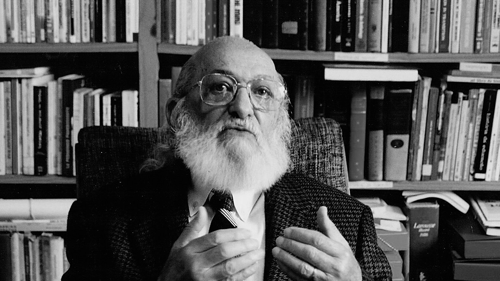
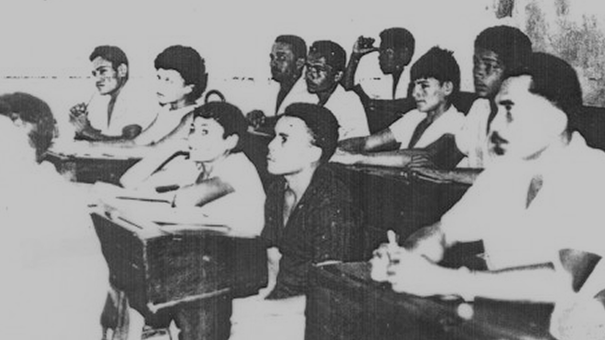
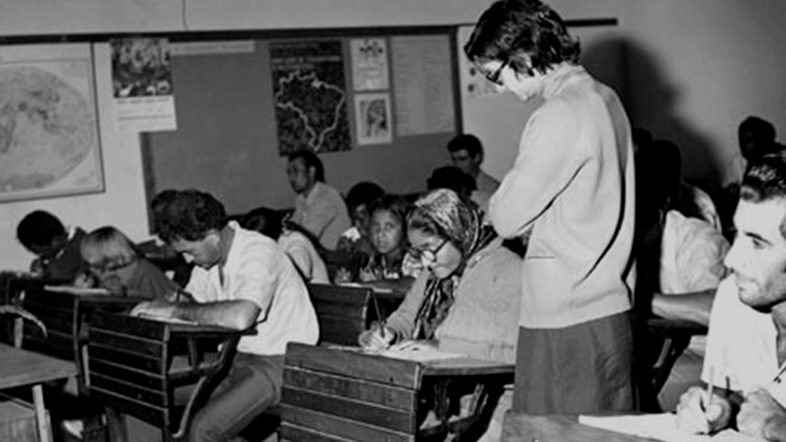
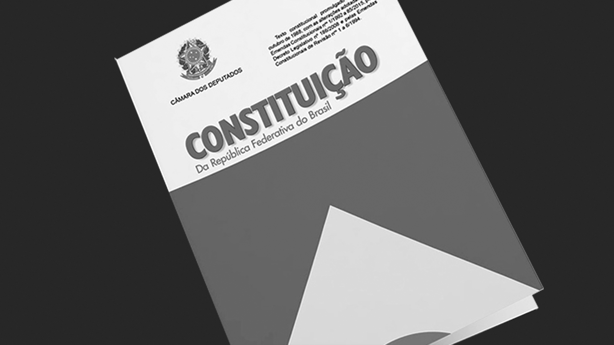
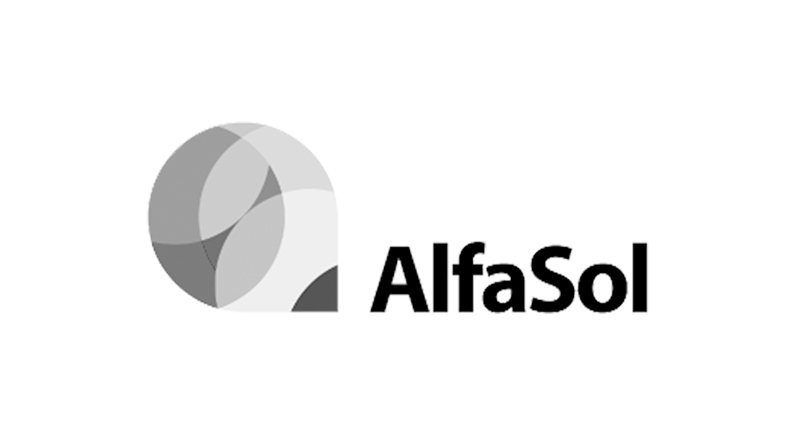

1888 - Sociedade Beneficente Luís Gama
Em 18 de maio de 1888, apenas cinco dias após a abolição, foi fundada a Sociedade Beneficente Luís Gama, em Campinas. Com proposta de amparo social, a entidade abriu um “colégio” com cursos para a educação de adultos trabalhadores, no período noturno, e para jovens, no diurno. Depois de muitas dificuldades, o “colégio” encerrou suas atividades na metade da década de 1890 (Maciel, 1997, p. 75). Em 1902, um professor negro daquela cidade, Francisco José de Oliveira, criou o “colégio” São Benedito para alfabetizar os filhos dos negros e mulatos. Cerca de um ano depois, o jornal O Baluarte informava acerca do curso preparatório, do intermediário e do exame de fim de ano do referido colégio (O Baluarte, 17 dez. 1903, p. 4). Em 1907, havia 272 alunos matriculados, dos quais 124 eram filhos de imigrantes e 14 nada pagavam. Em 1908, chegou a reunir 422 alunos. Em 30 de abril de 1910, o colégio foi incorporado à Federação Paulista dos Homens de Cor (Domingues, 2004, p. 352).
1960 - Paulo Freire e a Educação Popular
Paulo Freire nasceu em 1921 em Recife, numa família de classe média. Formou-se em direito, mas não seguiu carreira, encaminhando a vida profissional para o magistério. Suas ideias pedagógicas se formaram da observação da cultura dos alunos – em particular o uso da linguagem – e do papel elitista da escola. Em 1963, em Angicos (RN), chefiou um programa que alfabetizou 300 pessoas. No ano seguinte, o golpe militar o surpreendeu em Brasília, onde coordenava o Plano Nacional de Alfabetização do presidente João Goulart. Freire passou 70 dias na prisão antes de se exilar. Em 1968, no Chile, escreveu seu livro mais conhecido, Pedagogia do Oprimido. Também deu aulas nos Estados Unidos e na Suíça e organizou planos de alfabetização em países africanos. Com a anistia, em 1979, voltou ao Brasil, integrando-se à vida universitária. Foi nomeado doutor honoris causa em 28 universidades em vários países e teve obras traduzidas em mais de 20 idiomas. Morreu em 1997, de parada cardíaca. Fundamentada no referencial teórico-metodológico freireano, compreende-se a educação popular como uma concepção de educação realizada por meio de processos contínuos e permanentes de formação, direcionados à transformação da realidade a partir do protagonismo dos sujeitos.
1960 - MEB: Movimento de Educação de Base
O Movimento de Educação de Base (MEB) foi idealizado pela Igreja Católica com propósito de atuar, frente à população rural, na promoção humana por meio da educação popular, mas sem objetivos explicitamente catequéticos. A alfabetização de adultos seria realizada através da rede de emissoras católicas que serviriam de escolas radiofônicas para transmissão dos conteúdos alfabetizadores, repassado para milhões de pessoas que acompanhavam as aulas no início da noite em áreas do Norte, Nordeste e Centro-Oeste do Brasil. Voltado para alfabetização da população rural, tinha como proposta promover uma educação de base que levasse o homem a refletir sobre seus valores pessoais, morais e cívicos engajando-o no preparo para as reformas básicas – tais como a reforma agrária e ajudando-o a defender-se de ideologias incompatíveis com o espírito cristão da nacionalidade (FAVERO, 2006, p. 56).
Vídeo – Fóruns de EJA entrevista com Osmar Fávero1967 - MOBRAL
Instituído pela Lei 5.379, de 15 de dezembro de 1967, no governo do presidente Arthur da Costa e Silva, atuou nesse primeiro momento apenas como órgão de assistência financeira e técnica às iniciativas de alfabetização de jovens e adultos. A partir de 1970 é reformulado, iniciando sua programação com o Decreto n° 1.124 de 8 de setembro. O Mobral tinha o intuito de alfabetizar adolescentes e adultos e em um período tido como breve – dez anos – erradicar o analfabetismo do país e se sobressair diante do peso do fracasso de dezenas de programas anteriores. Buscava-se atender a população urbana entre 15 e 35 anos, caracterizada pela faixa etária de pessoas que atenderia a demanda por mão de obra. Podemos aproximar essa posição ao que frisa Jannuzzi (1979), estando a prioridade não em proporcionar educação de qualidade, mas em suprir as necessidades da industrialização, afinal, nota-se que nesse período o país estava sob as perspectivas otimistas do “milagre econômico”.
Saiba mais sobre o mobral1988 - Constituição
A Constituição Federal de 1988 garantiu pela primeira vez, no plano legal, o direito ao ensino fundamental gratuito, inclusive aos que não tiveram na idade própria, incluindo, portanto, jovens, adultos e idosos. A Constituição afirma ainda que “o acesso ao ensino obrigatório e gratuito é direito subjetivo” e que “o não oferecimento do ensino obrigatório pelo poder público, ou sua oferta irregular, importa responsabilidade da autoridade competente”.
Clique aqui1996 - Lei de Diretrizes e Bases da Educação - Lei nº 9.394 de 20 de dezembro de 1996
Estabelece:
VII – Oferta de educação escolar regular para jovens e adultos, com características e modalidades adequadas às suas necessidades e disponibilidades, garantindo-se aos que forem trabalhadores as condições de acesso e permanência na escola [...].
1997 - AlfaSol: Alfabetização Solidária
O Programa Alfabetização Solidária foi criado em 1997 no âmbito do Programa Comunidade Solidária fundado pela antropóloga Ruth Cardoso, esposa do Presidente Fernando Henrique Cardoso. Implantado em municípios do Norte e do Nordeste e em grandes centros urbanos, tinha por objetivo reduzir o analfabetismo nas localidades com menor IDH. Funcionava a partir do estabelecimento de “parcerias” com Instituições de Educação Superior (IES) que selecionavam e ofereciam formação inicial para coordenadores e alfabetizadores entre os moradores com maior escolaridade para ministrar aulas de alfabetização em cursos com duração de um semestre. O Programa era financiado com recursos advindos de doações de empresas e de cidadãos (da campanha “adote um aluno”) e com fundos governamentais. Após a finalização do Programa se tornou a ONG AlfaSol, atuante ainda hoje.
2000 – Diretrizes Nacionais para a Educação de Jovens e Adultos
As Diretrizes Curriculares Nacionais para a EJA abrangem os processos formativos da Educação de Jovens e Adultos como uma das modalidades da Educação Básica nas etapas dos ensinos fundamental e médio, nos termos da LDBEN 9394/96.
Resolução CNE/CEB nº 1, de 5 de julho de 2000.
Parecer do Conselho Nacional de Educação estabelecendo fundamentos e funções da EJA.